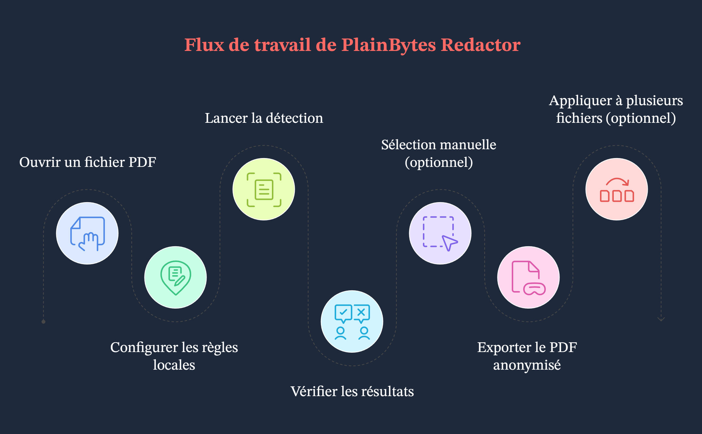

Rédigé pour la version actuelle de l’application Windows. Si un point ne correspond pas à la version installée chez vous, fiez-vous à l’interface de l’application.
1. À quoi sert cette application
1.1 Suppression réelle vs simple masque visuel
Ces deux approches n’ont pas du tout la même portée en matière de conformité et de sécurité :
Aspect
Masque visuel (la barre noire classique)
Caviardage réel (l’objectif de cette application)
Dans le PDF
Le texte, les vecteurs ou les images peuvent rester dans le fichier, parfois simplement recouverts par un autre élément graphique.
Le contenu correspondant est retiré du flux du document afin qu’il ne puisse pas être récupéré par une analyse normale.
Copier / rechercher
Selon l’outil utilisé, le texte « caché » peut encore être copié.
L’objectif est que le texte sélectionnable ne contienne plus les chaînes sensibles (à vérifier sur le fichier exporté).
À privilégier pour
La lecture à l’écran ou un masquage provisoire.
Le partage externe, l’archivage, les audits, la due diligence, bref les cas où le contenu doit disparaître définitivement.
PlainBytes Redactor est conçu autour d’un caviardage réel. Utilisez Confirmer pour indiquer clairement les zones qui seront réellement supprimées à l’export.
1.2 Ce que signifie « local et hors ligne »
Le travail reste sur ce PC : ouverture du PDF, correspondance des règles, IA locale facultative, écriture du fichier caviardé et validation s’exécutent localement.
Aucun téléversement de document pour le caviardage : le produit n’est pas conçu pour envoyer vos fichiers vers le cloud dans le cadre du traitement de caviardage.
À distinguer de l’aide et des mises à jour : lorsque vous ouvrez l’aide, la recherche de mises à jour ou des menus similaires, Windows peut lancer votre navigateur ou le Microsoft Store. Cela ne remet pas en cause le traitement de caviardage hors ligne.
1.3 Quand l’utiliser
Les flux de travail juridiques, financiers, médicaux, publics ou d’audit qui exigent une revue humaine et une surface d’exposition réduite.
Vous devez transmettre un PDF tout en retirant des identifiants, numéros de compte, coordonnées et autres éléments identifiants.
Vous avez plusieurs PDF avec la même mise en page : après confirmation sur un fichier « modèle », vous pouvez utiliser Appliquer à plusieurs fichiers pour réutiliser la même géométrie sur les autres (voir l’étape G en §3 et le §9).
2. Notions clés
2.1 Marques de caviardage (RedactionMark)
En interne, chaque zone susceptible d’être caviardée est une marque de caviardage : en pratique, un rectangle sur une page avec des métadonnées.
Page et rectangle : position et taille dans les coordonnées du PDF.
État : en attente ou confirmée. Seules les marques confirmées sont supprimées lors de l’export.
Source : règles (motifs/regex), IA ou sélection manuelle, afin de distinguer les détections automatiques de ce que vous avez tracé vous-même.
Catégorie et risque : utilisés pour filtrer, trier et effectuer des actions en masse dans la liste d’audit.
2.2 Ce que signifie « confirmer », et pourquoi c’est manuel
L’automatisation ne décide pas à votre place : les règles comme l’IA peuvent signaler à tort du texte normal ou manquer de vraies données sensibles. L’application ne suppose donc jamais que « tout ce qui est trouvé doit être supprimé ».
Confirmer = valider après revue : une fois confirmée, une marque est incluse dans l’ensemble exporté ; ce qui reste en attente n’est pas traité comme définitif.
Adapté aux revues réelles : cette étape supplémentaire correspond aux pratiques de double revue, de traçabilité et évite d’effacer par erreur toute une page en un clic.
2.3 Règles vs IA locale
Aspect
Moteur de règles
IA locale
Base
Motifs intégrés ou personnalisés (mots-clés, regex), selon vos paramètres de région et de scénario.
Modèles ONNX locaux pour la détection sémantique ou d’entités ; la qualité dépend des langues et des données d’entraînement.
Prévisibilité
Lorsque les motifs sont clairs, le comportement est stable et facile à expliquer.
Plus souple avec la mise en page et la formulation ; les cas limites méritent une vérification humaine.
Usage typique
Champs très structurés : identifiants, téléphones, e-mails.
Texte narratif moins structuré : noms, adresses, organisations sans format fixe.
En pratique, les deux fonctionnent souvent ensemble ; la liste d’audit affiche tout sous forme de marques, et vous choisissez ce qu’il faut confirmer.
2.4 Le repère de traitement par lot
Il n’existe pas de flux du type « enregistrer ceci comme modèle nommé et le choisir plus tard ». Le mode lot utilise un repère géométrique en mémoire : lorsque vous accédez au mode lot via Appliquer à plusieurs fichiers, l’application transforme chaque marque confirmée du document actuel en rectangle normalisé (page + coordonnées relatives à la taille de page), uniquement pour cette session de lot.
Pour chaque PDF de la file, le moteur de lot applique uniquement ces rectangles : il ne relance pas une analyse complète par règles ou par IA pour chaque fichier.
Quand c’est adapté : plusieurs exports issus du même système, avec la même mise en page et les zones sensibles aux mêmes emplacements (par exemple des relevés uniformes). Si la mise en page varie, les cadres peuvent tomber au mauvais endroit : contrôlez les premiers résultats.
Règles du centre : elles vous aident à trouver des correspondances dans le flux actuel à fichier unique ; elles ne sont pas relancées automatiquement pour chaque fichier de la file. Le lot s’appuie sur les positions confirmées que vous avez déjà validées.
3. Flux de travail complet
Exemple de départ
Dans cet exemple, une personne du service juridique doit diffuser en externe un PDF de départ d’employé de 8 pages. Les numéros de mobile, fragments de carte bancaire et adresses e-mail personnelles doivent être retirés. Le fichier est un vrai PDF électronique avec du texte sélectionnable, pas une numérisation à plat.

Vue d’ensemble du flux
Étape A : ouvrir le document
Utilisez Ouvrir ou le glisser-déposer pour charger le PDF (les formats d’image courants sont aussi pris en charge ; le parcours dans l’application peut varier).
Tout — aperçu, détection et marques — est lié à ce fichier source ; ouvrez donc bien la version que vous souhaitez réellement caviarder.
Étape B : choisir la région et le scénario dans le centre de règles
Ouvrez Règles, choisissez une région (pays/zone), puis un scénario métier (général, financier, etc.). Activez ou désactivez les règles intégrées, ou ajoutez des règles personnalisées si nécessaire.
L’ensemble de règles effectif dépend de la région et du scénario ; un mauvais scénario peut laisser des règles utiles désactivées ou produire plus de bruit. Vous pouvez enregistrer vos préférences avant de fermer afin de gagner du temps sur les documents similaires.
Étape C : lancer la détection
À droite, dans la stratégie d’analyse, cliquez sur Démarrer la détection (ou le contrôle équivalent) et laissez le modèle du document et l’analyse complète se terminer.
Les résultats des règles et de l’IA locale deviennent alors une liste de marques en attente. Si vous changez la région, le scénario ou les règles, relancez la détection pour mettre la liste à jour.
Étape D : vérifier dans la liste d’audit
Dans le suivi d’audit à droite, parcourez les éléments un par un ou utilisez les filtres. Confirmez ce qui doit disparaître ; annulez la confirmation ou supprimez les lignes correspondant à des faux positifs (les contrôles exacts dépendent de la version). Les surbrillances jaunes dans l’aperçu restent généralement synchronisées : un clic peut changer l’état de confirmation.
Cette étape évite de supprimer le mauvais contenu ou d’oublier une donnée ; l’export ne tient compte que des marques confirmées.
Étape E : encadrer ce qui a été oublié
Tracez des rectangles dans l’aperçu de gauche sur tout ce que les règles ou l’IA n’ont pas détecté, mais qui doit selon vous être caviardé. Ajustez les couleurs de sélection si cela aide sur les arrière-plans chargés.
La détection automatique ne peut pas tout trouver ; les cadres manuels sont votre filet de sécurité.
Étape F : exporter
Choisissez Exporter le fichier caviardé, sélectionnez un emplacement d’enregistrement, puis lisez le résumé de fin (nombre d’éléments retirés, nettoyage des métadonnées, messages de validation).
Vous obtenez une copie prête à être partagée ; le résumé sert de contrôle rapide. S’il signale des avertissements, ouvrez le PDF exporté et vérifiez quelques pages.
Étape G (facultatif) : appliquer à d’autres fichiers
Une fois que tout ce qui doit être caviardé est confirmé dans ce PDF, utilisez Appliquer à plusieurs fichiers (ou l’entrée équivalente). L’application construit le repère normalisé décrit plus haut et ouvre le caviardage par lot. Ajoutez d’autres PDF ayant la même mise en page, choisissez un dossier de sortie, indiquez s’il faut supprimer les métadonnées, puis lancez le traitement.
Lorsque les mises en page correspondent vraiment, vous évitez de refaire les mêmes confirmations fichier par fichier ; le lot supprime physiquement les zones encadrées. Important : il ne s’agit pas d’un modèle nommé réutilisable sur disque. Il n’y a pas de fichier modèle séparé ; le repère vient de ce document confirmé. Le lot ne relance pas non plus les règles ou l’IA pour chaque fichier de la file. Si la mise en page d’un fichier a changé, repassez par le flux à fichier unique.
4. Présentation de la fenêtre principale
Fenêtre principale
4.1 Aperçu (à gauche)
Rôle : affiche chaque page du PDF (ou de l’image) afin que les numéros de page et la mise en page correspondent au fichier.
Marques : les zones en attente, automatiques ou manuelles, apparaissent en surbrillance ; cliquer sur une zone permet souvent de basculer son état de confirmation en même temps que dans la liste (le signal jaune dépend de la version).
Cadres manuels : cliquez-glissez dans l’aperçu pour ajouter une marque rectangulaire.
4.2 Panneau de stratégie d’analyse
Rôle : point d’entrée pour lancer la détection (par exemple Démarrer la détection), en cohérence avec la région, le scénario et les jeux de règles du centre.
Pourquoi c’est séparé : cela distingue « quand analyser tout le document » de « comment traiter la liste d’audit », ce qui évite les confusions.
4.3 Apparence des sélections
Rôle : régler l’apparence des sélections manuelles — bordure, remplissage, couleurs personnalisées — afin que les cadres restent visibles sur des arrière-plans chargés.
À savoir : il s’agit seulement d’une aide visuelle ; le caviardage dépend toujours de la confirmation et de l’export.
4.4 Liste de suivi d’audit
Rôle : regrouper les éléments sensibles détectés dans le document ouvert, avec des filtres par catégorie et par risque, ainsi que des actions de confirmation ou d’annulation par ligne ou en masse.
Synchronisation avec l’aperçu : sélectionner ou modifier une ligne fait généralement défiler la page et met la zone en évidence ; cliquer sur une marque dans l’aperçu met à jour l’état dans la liste.
4.5 Barre d’outils (de haut en bas)
Ouvrir : choisir un PDF local ou une image prise en charge.
Fermer le document : ferme le fichier actuel.
Page précédente / suivante : utilisez la barre d’outils. Sur la page à fichier unique, Page Up / Page Down servent séparément au défilement de l’aperçu (voir §7.3).
Règles : ouvre le centre de règles.
Lot : ouvre le caviardage par lot.
Exporter le fichier caviardé : disponible lorsqu’il existe des marques confirmées.
Plus (⋯) : langue, aide, commentaires, mises à jour, à propos, etc.
La barre d’état indique notamment si l’application est prête, le nom du fichier actuel et si le moteur d’IA locale est disponible.
5. Centre de règles
5.1 Région et scénario métier
Région : pays ou zone ; détermine les motifs intégrés applicables (formats d’identifiants, règles de téléphone, etc.).
Scénario métier : resserre ou met en avant des groupes de règles (général, financier, santé, juridique/gouvernement) afin que les valeurs par défaut correspondent au type de document.
Ensemble : définissez d’abord la région, puis le scénario ; après modification, relancez la détection, sinon vous risquez de consulter les résultats d’un ancien passage.
5.2 Règles intégrées vs règles personnalisées
Intégrées : fournies avec l’application, regroupées par type (identité, finance, adresse, contact, etc.), activables règle par règle, basées sur des données locales et utilisables entièrement hors ligne.
Personnalisées : un libellé et un motif, sous-chaîne simple (sans tenir compte de la casse) ou expression régulière .NET. Pratique pour les codes internes inconnus des règles intégrées. Le nombre de règles ajoutées peut être limité.
5.3 Quand ajuster les règles
Trop de bruit : désactivez temporairement les règles trop larges ou choisissez un scénario plus adapté.
Le même motif revient souvent sans correspondance intégrée : ajoutez une règle personnalisée pour réduire les cadres manuels.
Configuration déréglée : Restaurer les valeurs par défaut efface les remplacements locaux (une confirmation vous sera demandée).
6. Volet d’audit
6.1 Pourquoi la confirmation fonctionne ainsi
Une ligne regroupe souvent plusieurs occurrences du même type sensible ou de la même clé sur plusieurs pages ; la confirmer revient à dire que tous ces emplacements doivent être supprimés.
En attente sépare la « proposition du modèle » de la « décision humaine », afin que rien ne soit écrit en masse sans revue.
Par conception, le moteur d’export ne consomme que les marques confirmées.
6.2 Filtres et confirmation en masse
Filtre : réduisez la liste par catégorie ou par risque afin de traiter d’abord les éléments à haut risque ou un type de champ précis (par exemple les contacts uniquement).
Masse : basculez l’état de confirmation pour tout ce qui est visible avec le filtre actuel (le libellé dépend de la version). C’est utile quand tout un groupe est clairement correct ou clairement faux.
Conseil : vérifiez le filtre actif avant une action en masse pour ne pas inclure des lignes que vous ne vouliez pas traiter.
6.3 Niveaux de risque
Les niveaux (critique, élevé, suspect, moyen, faible, par exemple) servent à trier et filtrer afin de faire remonter d’abord les résultats les plus risqués. Ils ne vous obligent pas à confirmer : vous décidez toujours ce qu’il faut caviarder.
7. Sélections manuelles
7.1 Quand tracer vos propres cadres
Les règles et l’IA ont manqué un élément que vous savez devoir retirer : annotations manuscrites sur photo, zone de mise en page atypique, etc.
Les résultats sont fragmentés ou mal alignés : supprimez les mauvaises lignes automatiques et tracez un cadre plus précis.
Contenu uniquement numérisé traité comme image : le comportement diffère des PDF textuels ; vous vous appuierez souvent sur les cadres manuels (voir la FAQ).
7.2 Travailler avec les marques détectées automatiquement
Ordre conseillé : lancer la détection → utiliser la liste d’audit pour éliminer les faux positifs évidents et repérer les motifs → ajouter quelques cadres manuels pour les vrais oublis → parcourir rapidement l’aperçu page par page. Les marques manuelles et automatiques sont traitées de la même façon à l’export ; l’important est qu’elles soient confirmées.
7.3 Raccourcis clavier (aperçu et marques)
Lorsque la page à fichier unique est chargée, elle enregistre PreviewKeyDown sur la fenêtre principale. Les raccourcis ci-dessous s’appliquent seulement lorsqu’un document est ouvert et que l’application n’est pas occupée. Ils ne sont pas reliés aux boutons page précédente/suivante de la barre d’outils.
Touche
Action
Tab
Marque de caviardage suivante.
Shift + Tab
Marque de caviardage précédente.
←↑→↓
Sans modificateur : ←↑ sélectionnent la marque précédente, →↓ la suivante. Avec un modificateur maintenu : seuls ↑↓ font défiler l’aperçu d’un pas fixe ; ←→ ne sont pas traités dans cette branche.
Enter
Sans modificateur : bascule la confirmation de la marque sélectionnée.
Delete
Sans modificateur : supprime la marque sélectionnée.
Page Up / Page Down
Fait défiler la pile d’aperçu d’environ une hauteur de fenêtre.
Home / End
Défile directement en haut / en bas de l’aperçu.
8. Export
8.1 Liste de vérification avant export
Vérifiez que c’est bien le fichier à diffuser (nombre de pages, pièces jointes).
Tout ce qui doit être caviardé est confirmé ; ce qui doit rester visible est annulé ou retiré de la liste.
Vous avez vérifié visuellement les pages clés dans l’aperçu, y compris les scans ou zones particulières encadrées manuellement.
Vous savez que l’export écrit un nouveau fichier (ou le chemin choisi) et n’écrase généralement pas l’original ; le comportement suit la boîte de dialogue d’enregistrement.
8.2 Pourquoi supprimer les métadonnées
Au-delà du contenu des pages, les PDF contiennent souvent auteur, producteur, horodatages, XMP, etc. Caviarder le texte tout en conservant les métadonnées peut encore révéler des comptes internes ou l’historique d’édition. L’application peut les nettoyer à l’export (et, facultativement, en lot). Pour tout document destiné à sortir de l’organisation, il est généralement préférable de laisser le nettoyage des métadonnées activé lorsque l’interface le propose.
8.3 Lire le résumé
Le nombre d’éléments supprimés physiquement correspond-il à ce que vous avez vu ?
Le résumé indique-t-il que les métadonnées ont été nettoyées ?
Si vous voyez des avertissements de validation du texte, l’échantillonnage automatique a trouvé quelque chose d’inhabituel : ouvrez le PDF exporté et vérifiez. Ne considérez pas le résumé seul comme une preuve d’absence totale de résidu.
9. Traitement par lot
9.1 Ce que fait réellement le mode lot
Après être entré par Appliquer à plusieurs fichiers avec un repère, chaque PDF de la file suit un chemin par application de rectangles uniquement : les rectangles normalisés sont convertis en coordonnées absolues par page, les marques sont créées, le contenu est supprimé physiquement et les métadonnées peuvent être nettoyées en option. Le mode lot ne relance pas la détection par règles ou par IA pour chaque fichier.
Les règles et l’IA utilisées en mode fichier unique vous ont donc aidé à trouver et confirmer les zones sur le modèle ; le lot se contente de recopier les emplacements confirmés sur les autres fichiers ayant la même géométrie.
9.2 Cas d’usage adaptés
Plusieurs PDF issus d’un même système, avec la même mise en page et des zones sensibles aux mêmes positions relatives.
Vous avez déjà terminé la détection et la confirmation sur un exemplaire et souhaitez éviter de répéter ce travail sur des copies presque identiques.
9.3 Points d’attention
Aucun fichier modèle enregistré : fermer la fenêtre de lot supprime le repère en mémoire ; la prochaine fois, recréez-le depuis Appliquer à plusieurs fichiers.
Ouvrir Lot depuis la barre d’outils sans passer par ce chemin peut vous laisser sans repère ; Démarrer peut alors rester désactivé.
De petits décalages de mise en page peuvent provoquer des oublis ou des zones incorrectes ; vérifiez ponctuellement les premiers fichiers générés.
Activez effacer les propriétés et les données masquées lorsque l’option est proposée pour un partage externe.
Certains types de documents ou niveaux de licence peuvent limiter le lot ; si Appliquer à plusieurs fichiers est grisé, c’est l’indication à suivre.
10. Questions fréquentes
10.1 Pourquoi y a-t-il autant de faux positifs ?
Les règles comme l’IA reposent sur des heuristiques : chaînes qui ressemblent à des données sensibles, noms de lieux confondus avec des noms de personnes, fragments de tableau, etc. Ajuster le scénario ou les règles, désactiver une règle trop bruyante ou annuler la confirmation dans la liste suffit généralement à reprendre le contrôle. La confirmation manuelle est volontaire : elle réduit le risque de supprimer en un clic un élément dont vous avez encore besoin.
10.2 Qu’en est-il des PDF numérisés ?
Si le PDF est en réalité une image de page sans vraie couche de texte, les règles et l’IA ont moins de matière à exploiter. Vous utiliserez donc davantage les cadres manuels ou le flux spécifique aux documents raster proposé par la version (suivez les indications à l’écran). Il est utile de savoir dès le départ si vous avez affaire à un PDF nativement numérique ou à un scan.
10.3 Puis-je caviarder des images ? Pourquoi le texte des photos n’est-il pas reconnu ?
Oui. Les formats d’image courants peuvent être ouverts comme un document ; vous continuez à prévisualiser, marquer et exporter. Pour conserver une taille d’installation et un coût d’exécution raisonnables, cette version n’intègre pas d’OCR : le texte des photos ne devient pas sélectionnable, donc la détection textuelle par règles ou par IA s’applique très peu. Caviardez les zones sensibles en traçant des cadres (et en utilisant les raccourcis clavier pour passer d’une marque à l’autre). Si vous devez « reconnaître puis faire correspondre », effectuez d’abord l’OCR ailleurs ou fournissez un PDF avec couche de texte.
10.4 Comment vérifier rapidement un export ?
Dans un lecteur PDF, essayez tout sélectionner / copier et rechercher les chaînes que vous savez sensibles.
Inspectez visuellement les en-têtes, pieds de page et notes.
Lisez le résumé de validation de l’export fourni par l’application ; en cas d’avertissement, revérifiez d’abord les pages concernées.
Pour les cas très sensibles, ajoutez les contrôles habituels de votre organisation : second outil, revue imprimée, etc.